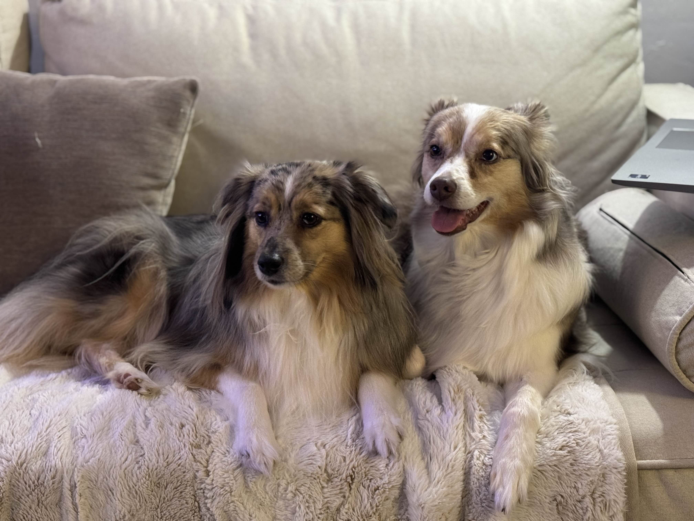

Some of my hobbies include:
Some of my interests have been taking daily walks, going to National Parks, antiquing, and collecting trinkets. Some of the National Parks we've been to Hot Springs, Great Sand
Dunes, and Great Smoky Mountains. I have two mini Australian Shepherds named Pickle and Lemon! Here's a photo of them:

I've also been reading the second book from the 'The Way of Kings' series and it has been good so far! You can also visit his website
here. to learn more about his work!
I am currently an Electrical Engineer at the FAA. While I enjoy the work I do and I love my team, I would like to pursue a career where I can be more creative. I want to learn how to make various websites and applications, and I want to start building up my portfolio! I was able to learn Adobe InDesign and Photoshop last semester, and now I am learning Illustrator alongside this class. I am hoping I finish my graduate certificate, and I am hoping my Master's application gets accepted!